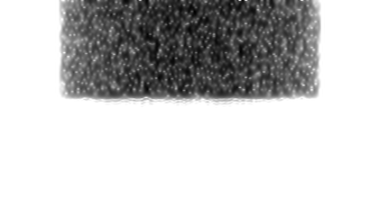
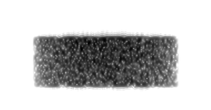
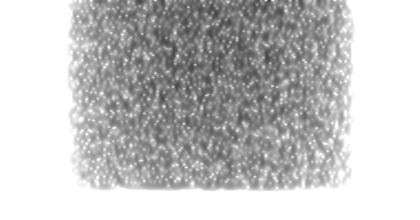
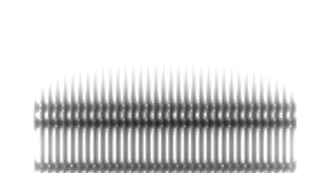
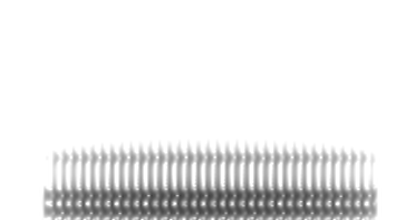
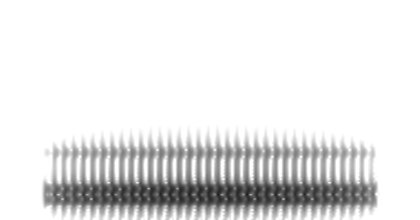
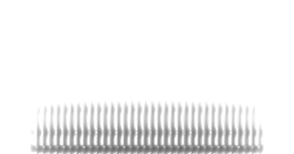

1. How to read a sound picture
Time runs left to right, like reading a sentence.
Low sounds sit at the bottom and high sounds at the top: 0 to 8,000 Hz (vibrations per second).
Darker means louder. White means silence.
2. Detective clues
Each sound leaves its own pattern. Study these with a partner before you open the case file.

Fuzzy static in the top half (above about 4,000 Hz).

Fuzzy static that reaches lower than S, darkest near 3,000 Hz.

Faint fuzz from low to high. Easy to miss!
A blank gap, then a thin line: p, t, k, b, d, g.

Stripes with a dark band high up, near 2,000 to 3,000 Hz.

Stripes with the dark part squeezed near the bottom.

Dark bands close together in the lower middle. The a in “cat” looks similar.

Faint stripes near the bottom: m and n.
Each thin vertical stripe is one buzz of your vocal folds, so vowels and hums look striped. S, SH and F have no buzz, only rushing air, so they look like static. Clue pictures are idealized; real words blend sounds together, so look for the strongest patterns.
3. The case file
Each picture shows one spoken word. Pick a word for every card, then press Check my answers.
Each word is used exactly once. Stuck? Sort first: which cards start with static? Which end with static? Then look at the vowel bands.
Case closed!
You read sound pictures the way a speech recognizer does: by spotting patterns like hiss, stripes and gaps. Next, make your own cards. Say a word into See Your Voice, press Pause, then Save picture, and swap with a partner.
For teachers (includes the solving path)
At a glance
15 minutes · grades 3–12 · pairs · one device per pair, or use the printable version (clue sheet, case file and answer key; black and white is fine).
Run it
- Study the clues with a partner (2 minutes).
- Match each card to a word (8 minutes). Check my answers marks each card, and wrong cards offer a hint.
- Discuss which clue cracked each case (5 minutes). Show all answers explains every card.
Fastest solving path
Cards A, E, F and H start with static; B, C, D and G do not. Endings separate A from E and D from G, and the vowel bands settle the rest.
Discussion prompts
- Would your voice make the same picture? Children’s voices are higher, so the buzz stripes pack closer together and the dark bands sit higher. That is one reason voice assistants find kids harder to understand.
- Why don’t computers just follow clues like these? Real speech changes with the speaker, speed and noise. Early systems tried hand-written rules; modern recognizers learn the patterns from many thousands of hours of examples.
Extensions
- Hard mode: print the case file and hide the word bank.
- Make your own cards with See Your Voice: say a word, press Pause, then Save picture.
- AI4K12 connection: Big Idea 1, Perception.
How the pictures were made
Word cards use Windows’ built-in computer voice, so they are cleaner and slower than real speech. Clue tiles are idealized sounds generated from simple models of the voice. Settings: 8 ms analysis window, 0 to 8,000 Hz, darker = louder.
Privacy
No sign-in or ads. Basic page analytics records visits, while answers are checked inside the browser tab and disappear when it closes.